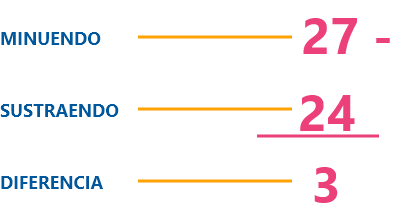
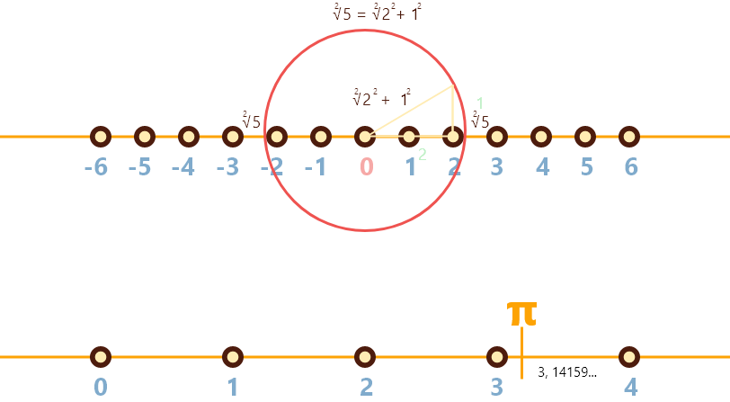
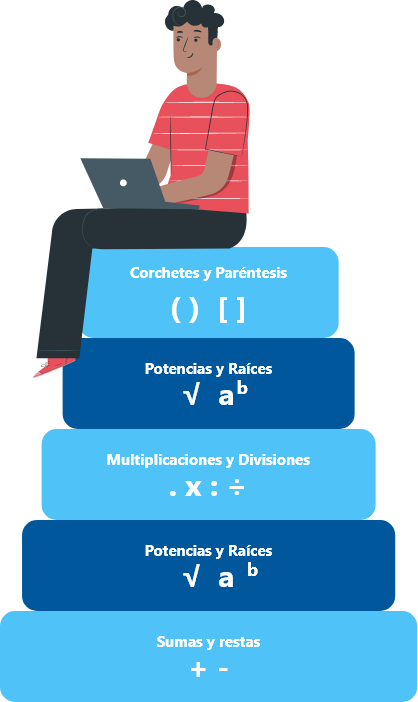
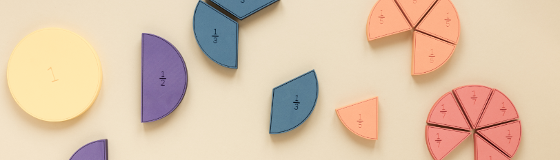
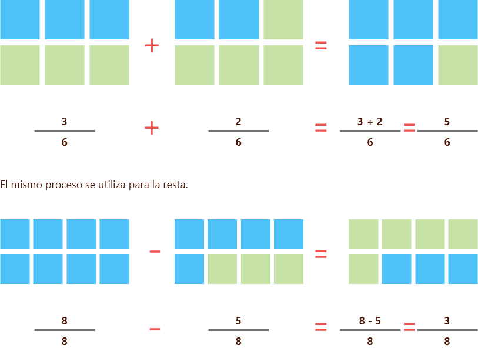
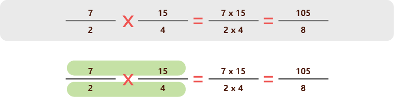
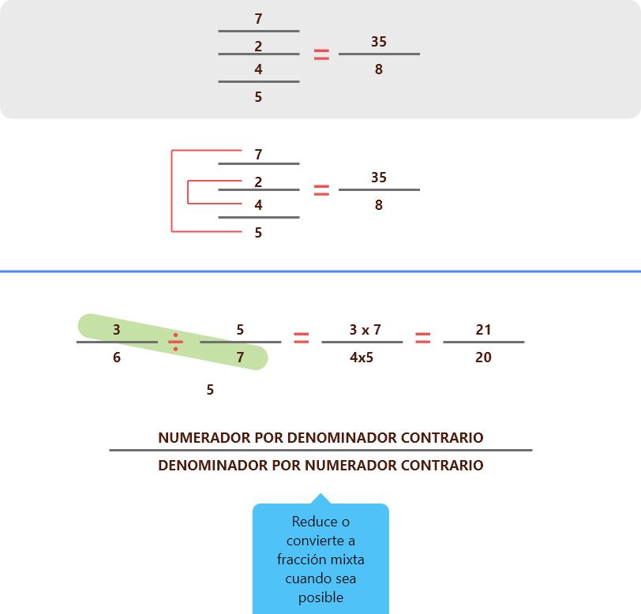
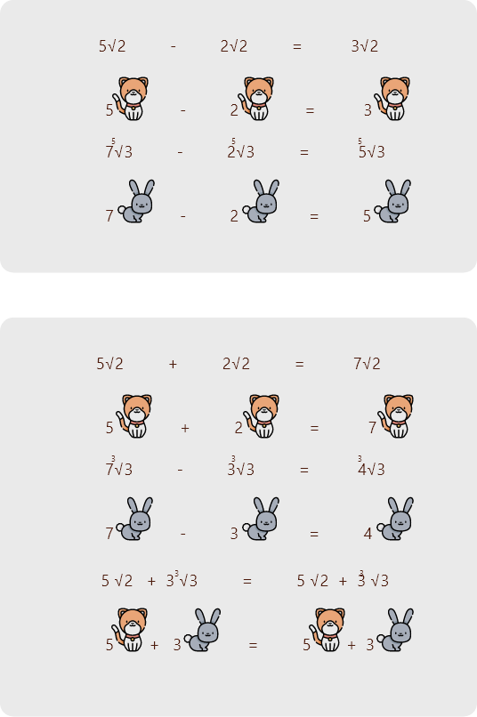
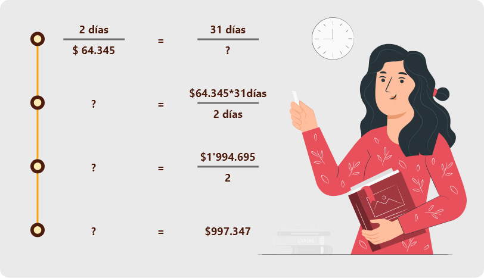

Introducción
Los números naturales surgieron de la necesidad del ser humano de negociar y ordenar cosas, el hombre tuvo la necesidad de representar las cantidades de lo que tenía para saber con qué contaba exactamente. De ahí surgió la necesidad de crear símbolos que representaran esas cantidades.
A partir de esta necesidad el hombre crea lo que hoy conocemos como números naturales. Estos son los primeros que surgen en las distintas civilizaciones debido a que contar y ordenar elementos son las tareas más elementales en el tratamiento de las cantidades.
1. Conjuntos numéricos
Bienvenidos
El desarrollo de la humanidad se ha dado a partir de las dificultades o necesidades que se presentan a lo largo de la historia, por ejemplo, el hombre primitivo sintió hambre entonces tuvo la necesidad de buscar comida fuese cazándola, colectándola o cultivándola; sintió frío entonces desarrolló el fuego y encontró la manera de cubrirse con pieles de animales.
Así mismo pasó con el desarrollo de las matemáticas, más específicamente con el surgimiento de los números y los conjuntos numéricos que eran utilizados para contar, hacer cálculos, resolver problemas, y demás actividades que requerían de la implementación del uso de las matemáticas.
En este espacio, nos ocuparemos en el estudio de los conjuntos numéricos: ¿qué son? ¿para qué sirven? ¿cómo se aplican?, conceptos que nos ayudarán a entender la naturaleza de los números y poder comprender el desarrollo de los temas posteriores de este curso.
Para el SENA es importante el desarrollo de las competencias en el ámbito educativo, laboral y personal.
1.1 Números naturales
Daremos inicio con el conjunto de los números naturales que se denotan con la letra (N).
N = { 1, 2, 3, 4, 5, 6, 7,.......}
El conjunto de los números naturales surgió de la necesidad de contar, lo cual se manifiesta en el ser humano desde sus inicios.
Este conjunto se caracteriza porque:
Tiene un número infinito de elementos.
Cada elemento tiene un sucesor y todos, excepto el 1, un antecesor.
El sucesor de un número natural, se obtiene sumando uno (+1); el antecesor se obtiene restando uno (-1).
Representación en la recta numérica de los naturales
Números Naturales
3 + 1 = 4
Utilizados para labores de conteo de objetos. Lo constituyen los enteros positivos (1, 2, 3, 4, 5, 6, …)
1.2 Números enteros
Los números enteros surgieron de la necesidad de incluir números negativos para dar solución a algunos problemas de matemáticas que no tendrían solución solo con números naturales.
Algunos ejemplos del uso de los números enteros son los siguientes:
Señalar una temperatura bajo cero en la escala Celsius (“En estos momentos, la temperatura en Bariloche es de -10°”) o una profundidad bajo el nivel del mar (“El barco hundido fue hallado a -135 metros”).
Este conjunto numérico nos permite realizar las operaciones básicas como la suma, la resta, la multiplicación y la división, los hindúes fueron los precursores en el manejo de los números enteros, siguiendo unas reglas específicas; para la suma y la resta se utiliza la recta numérica y para la multiplicación y la división se hace uso de la ley de signos:
+ por + = +
- por - = +
+ por - = -
- por + = -
En materia de multiplicación hay que subrayar además que existen diversas propiedades como son la asociativa, la distributiva o la conmutativa.
Continuemos con el conjunto de los números enteros que se denotan con la letra (Z).
Z = {. . ., –3, -2, -1, 0, 1, 2, 3, . . .}
El conjunto de los números enteros surge de la necesidad de dar solución general a la sustracción, pues cuando el sustraendo es mayor que el minuendo, esta sustracción no tiene solución en los conjuntos naturales (por ejemplo: 5 – 20 = ¿?).
Ejemplo
5 – 20 = ¿?
Números Enteros
Z
Resultado de la unión de los números naturales, el cero y los números negativos (. ., -2, -1, 0, 1, 2, . . .).
Sustracción de números naturales
Es la operación de restar (quitar, disminuir).
Debido a esto, la recta numérica se extiende hacia la izquierda, de modo que a cada punto que representa un número natural le corresponda un punto simétrico, situado a la izquierda del cero.
El punto simétrico, es aquel que está ubicado a igual distancia del cero (uno a la derecha y el otro a la izquierda de él).
Números Negativos
5 - 8 = -3
Los números negativos aparecieron dada la necesidad de representar deudas, se identifican añadiendo un símbolo o color diferente a los naturales (-1, -2, -3, -4, -5).
Revisemos sus principales características:
Z = Son la unión de los números naturales positivos, el cero y los números negativos.
Z = Tiene 3 subconjuntos:
Enteros negativos: Z-
Enteros positivos: Z +
Enteros positivos y el cero: Z + U { 0 }
Por lo tanto, el conjunto de los números enteros, es la unión de los tres subconjuntos mencionados.
Z = Z - U { 0 } U Z +
1.3 Números racionales
Bienvenidos
Los números racionales son aquellos que nos permiten dividir una unidad en partes iguales y tomar de ella lo necesario, un ejemplo muy sencillo es el de una pizza, supongamos que usted pide una pizza de 8 porciones para su familia que son 5 personas, si a cada uno toma una porción, se habrán consumido 5/8 partes y sobran 3/8.
Ya desde el antiguo Egipto se utilizaban estos números, inclusive fue encontrado un papiro en el cual tenían una tabla de representaciones de 2/n en forma de fracciones egipcias para números impares entre 5 y 101, el famoso papiro de Rhind.
Ahora bien, miremos el conjunto de los números racionales que se denotan con la letra (Q).
Q = {. . ., - ¾, - ½, - ¼ , 0, ¼ , ½, ¾, . . .}
El conjunto de los números racionales se creó debido a las limitaciones de cálculo que se presentaban en el conjunto de los números naturales y números enteros.
Pero ¿Cómo surgen los números racionales? hagamos un ejemplo, toma un pan y divídelo para tres personas, esto numéricamente sería:
1 pan / 3 personas. Veamos el ejemplo.
Como el resultado no es un número entero, Para solucionar esta dificultad, se creó este conjunto, el cual está formado por todos los números de la forma a/b. Esta fracción en la cual el numerador es a, es un número entero y el denominador b, es un número entero distinto de cero.
Números Racionales
Q
Surgieron de la necesidad de comparar dos cantidades. Se definen como la razón entre dos números enteros. a/b siendo b diferente de 0 e incluye a los números enteros (1/2, -4/3, 5/1, . . .)
1.4 Números irracionales
Pero aún hay más, conjunto de números irracionales denotado con la letra (Q*) con un asterisco.
Q* = { . . ., -π, –√5, -φ, -√2, √2, φ √5, π, . . .}
Conjunto de números decimales infinitos no periódicos
Este conjunto surgió de la necesidad de reunir a ciertos números que no pertenecen a los conjuntos anteriores; entre ellos se pueden citar a las raíces inexactas, el número Pi, etc.
A él pertenecen todos los números decimales infinitos puros, es decir aquellos números que no pueden transformarse en una fracción. No deben confundirse con los números racionales, porque éstos son números decimales finitos, infinitos periódicos e infinitos semiperiódicos que sí pueden transformarse en una fracción.
Ejemplo
1,4142135....
0,10200300004000005...
Números Irracionales
π
Surgen de la imposibilidad de expresar numéricamente ciertas cantidades como una razón entre dos números enteros. Ejemplo de ellos es la razón entre la circunferencia y el diámetro.
Veamos a continuación, unos ejemplos de cómo operan estos números.
Representación en la recta numérica de los números irracionales
1.5 Números reales
Ya casi finalizamos, miremos el conjunto de números reales denotados por la letra (R).
R = { . . . , - 10, -1, - ¾, - ½, - ¼, 0, ¼ , √2, 5 , . . . }
Surgen de la necesidad de reunir los racionales y los irracionales en un solo conjunto. Se denotan por R.
R = { Q U Q* }
Números Irracionales
R
Es el conjunto numérico que contiene tanto a los números racionales como a los irracionales. Su aplicación en nuestra civilización es muy variada.
Representación en la recta numérica de los números reales
1.6 Números complejos e imaginarios
Para finalizar nuestro recorrido por el mundo de los conjuntos numéricos, existen dos conceptos los cuales hace parte del mundo matemático:
Hablamos de los números imaginarios (i) y complejos (C), son utilizados frecuentemente en los campos de la física como en la mecánica cuántica, electrónica, telecomunicaciones, ingenierías, entre otras.
De esta manera podemos entender las dimensiones de la teoría de los conjuntos numéricos.
2. Operaciones aritméticas
Recordemos
Desde que el hombre empezó a utilizar los números para cuantificar todo lo relacionado con agricultura, población y demás aspectos relacionados con los números, también empezó a realizar operaciones como añadir y quitar unidades a un conjunto determinado.
A partir de esto surgió la aritmética, la cual es la rama de las matemáticas que relaciona los números y las diferentes operaciones que se pueden realizar con los números (Suma, resta, multiplicación y división) así mismo las propiedades implícitas en dichas operaciones.
En este tema nos ocuparemos de las cuatro operaciones básicas: suma, resta, multiplicación y división en los diferentes conjuntos numéricos o los números reales. Así mismo también trabajaremos la potenciación y radicación y sus propiedades.
Pero debemos tener en cuenta una regla que para las operaciones combinadas en el conjunto de los números reales es necesario conocer la jerarquía de operaciones.
Pero qué es la jerarquía de operaciones, comencemos enunciando de qué trata:
2.1 Jerarquía de operaciones
La jerarquía de operaciones básicamente es una regla que nos determina cuáles operaciones se deben realizar primero en un determinado ejercicio que contenga varias operaciones como: sumas, restas, multiplicaciones, paréntesis, potencias y raíces. Para esto lo primero que debe realizarse es las operaciones que se encuentren agrupadas en paréntesis, llaves y corchetes, luego deben resolverse las potencias y raíces, posteriormente las divisiones y multiplicaciones en orden (De izquierda a derecha), y por último debemos resolver las sumas y restas.
Veamos un ejemplo:
3 x ( 2 x 43 ) / 4
Paso 1
Primero se resuelve lo que está dentro de paréntesis:
( 2 x 43 )
Dentro del paréntesis se resuelve el exponente 43, que es igual a 64
2 x 64 = 128
Paso 2
Se resuelve la multiplicación ya que se encuentra primero (a la izquierda).
3 x 128 = 384
Paso 3
Finalmente, se realiza esta división.
384 / 4 = 96
2.2 Operaciones en números enteros
Suma y resta de números enteros
Cuando los números enteros tienen el mismo signo.
Se suman los valores y se deja el signo que tengan, si son positivos signo positivo y si son negativos signo negativo. Si no se pone nada delante del número se entiende que es +.
Ejemplos números enteros del mismo signo
( + 5 ) + ( + 4 ) = + 9
Es lo mismo que.
5 + 4 = 9
(- 5 ) + ( - 4 ) = - 9. Es lo mismo que.
- 5 - 4 = - 9
Cuando los números enteros tienen distinto signo.
Se restan sus valores absolutos y se pone el signo del sumando de mayor valor absoluto. (Se restan y se deja el signo del más grande en valor absoluto).
Ejemplos números enteros de distinto signo
A. ( + 20 ) + ( - 10 ) = 20 - 10 = + 10
20 - 10 = 10, el más grande es + 20, se pone + 10
B. ( - 8 ) + ( + 3 ) = - 8 + 3 = - 5
8 - 3 = 5, el más grande es el - 8, se pone - 5
C. ( + 11 ) + ( - 2) = 11 - 2 = + 9
11 - 2 = 9, el más grande es el 11, se pone + 9
Multiplicación y división de números enteros
Para estas operaciones es importante enunciar las reglas de los signos como se muestra en la siguiente imagen.
Reglas de signos
Multiplicar
+ por + = +
- por - = +
+ por - = -
- por + = -
Dividir
+ entre + = +
- entre - = +
+ entre - = -
- entre + = -
Para multiplicar dos números enteros.
Se multiplican sus valores absolutos y se aplica la regla de los signos. Cuando van dos signos seguidos hay que separarlos utilizando paréntesis.
Ejemplo
A. ( + 8 ) * ( + 3 ) = + 24
B. ( - 3 ) * ( - 2 ) = + 6
Para dividir dos números enteros.
Se divide el dividendo entre el divisor y se aplica la regla de los signos. Una división es exacta cuando el resto es 0.
Ejemplo
A. ( - 15 ) ÷ ( 15 ) = - 1
B. 8 ÷ 4 = + 2
Ahora realicemos un problema en el que podamos utilizar la información presentada.
En un depósito hay 1200 litros de leche. Por la parte superior un tubo vierte en el depósito 25 litros por minuto, y por la parte inferior por otro tubo salen 35 litros por minuto. ¿Cuántos litros de leche habrá en el depósito después de 20 minutos de funcionamiento?
1000 litros de leche
850 Litros de leche
Respuesta
Paso 1
Lo primero que debemos realizar es pasar el problema a términos aritméticos para empezar a resolverlo y sacamos los datos cuantitativos.
Paso 2
1200 litros es la cantidad inicial de leche.
Paso 3
Luego debemos calcular la cantidad de leche que ingresa al depósito en los 20 minutos de funcionamiento: 25 litros que ingresan en un minuto lo multiplicamos por la cantidad de minutos que son veinte:
( 25 litros * 20 minutos )
Paso 4
Así mismo calculamos la cantidad de leche que sale del depósito en los mismo 20 minutos: 35 litros que salen por minuto lo multiplicamos por la cantidad de minutos que son veinte:
( 35 litros * 20 minutos )
Paso 5
Ahora calculamos la cantidad total de leche que queda en el depósito después de 20 minutos.
A la leche que hay en el depósito, le sumamos la leche que ingresa y le restamos la leche que sale y quedaría una expresión aritmética de esta forma:
1200 litros + ( 25 litros * 20 minutos ) – ( 35 litros * 20 minutos )
Resolvemos los paréntesis y nos queda.
1200 litros + 500 litros – 700 litros = 1000 litros
Luego realizamos las sumas y restas y nos da como resultado:
1000 litros quedan en el depósito
Respuesta Correcta
1000 litros de leche
2.3 Operaciones en los números racionales
Recordemos que los números racionales también pueden ser nombrados como fracciones. Y que una fracción es dividir cualquier cantidad en cantidades iguales y tomar algunas de esas partes.
Empecemos a realizar operaciones de suma y resta de fracciones homogéneas. Son aquellas que tienen igual denominador.
Para sumar o restar números racionales homogéneos se coloca el mismo denominador y se suman o restan los numeradores así:
Ahora miremos el proceso que realizamos cuando los denominadores son distintos, lo que llamamos operaciones con fracciones heterogéneas.
Para adicionar o sustraer números racionales heterogéneos, se multiplican los denominadores entre sí y ese será el denominador de la respuesta, luego se multiplica el numerador de la primera fracción por el denominador de la segunda. Se coloca el mismo signo (de operación) y se procede a multiplicar el numerador de la segunda fracción por el denominador de la primera fracción. En cada caso se debe simplificar la respuesta si es posible.
Ejemplo
3 / 4 + 5 / 7
Paso 1
Se multiplican los denominadores.
4 * 7 = 28
Paso 2
Se multiplican el numerador de la primera fracción por el denominador de la segunda.
3 * 7 = 21
Paso 3
Se coloca el signo más. ( + )
Paso 4
Se multiplica el numerador de la segunda fracción por el denominador de la primera.
4 * 5 = 20
Paso 5
Por último, sumamos los dos números que nos quedan en el en la parte de arriba.
21 + 20 = 41

Ahora veamos en que se puede aplicar la suma y resta de fracciones en un caso cotidiano.
Un campesino siembra 2 / 7 de su finca con papa y 1 / 5 con tomate. Responde:
A. ¿Qué fracción de su finca tiene sembrada?
B. ¿Qué fracción de su finca está sin sembrar?
Para el primer interrogante debemos sumar las dos porciones de finca que están sembradas.
La fracción de finca que se encuentra sembrada con papa y tomate es 17 / 35.
Respuesta Correcta
17 / 35
Para dar respuesta al segundo interrogante procedemos de la siguiente manera.

La fracción que representa el total de la finca puede expresarse como 35 / 35 que es igual a 1, ya que todo el terreno expresado en fracciones debe ser igual a 1 porque sería el terreno en general.

Ahora procedemos a realizar la resta así:
O bien también se puede realizar de la siguiente forma:
Recordemos que es una resta de fracciones homogéneas por lo tanto se pone en el resultado el mismo denominador y se operan los numeradores.
Respuesta Correcta
18 / 35
2.4 Multiplicación de números racionales (fracciones)
El producto de dos números racionales es otro número racional y se realiza multiplicando los numeradores entre sí y denominadores entre sí.
Pero mejor veamos un ejemplo:
Para evidenciar en que se aplica la multiplicación de fracciones continuemos con la situación presentada anteriormente del campesino y sus cultivos.
Teniendo en cuenta que la finca del campesino cuenta con 1000 m2 y la fracción de ese terreno sembrada es de 17 / 35.
A. ¿Cuánto mide en metros cuadrados la parte del terreno que se encuentra sembrada?
B. Teniendo en cuenta que 2 / 7 se encuentra sembrada con papa, ¿Cuál es el área que se encuentra con papa?
Para encontrar la medida o el área del terreno sembrado multiplicamos el total de metros cuadrados (1000) por la fracción que se encuentre sembrada así:
Le ponemos el 1 de denominador al 1000 para que quede expresado como fracción.
Simplificamos:
Recordemos que simplificar es dividir tanto el numerador como el denominador por el mismo número primo. En este caso el 17000 es divisible por 2 y por 5, mientras que el 35 es divisible por 5 y por 7. Así que dividimos ambos números por 5 y nos queda:
Por último, dividimos la fracción y nos da como resultados que la cantidad de terreno que se encuentra sembrado es de 485.71 m2
La fracción quedaría.
2.5 División de fracciones
Para dividir dos números racionales se multiplica el numerador del primer número racional con el denominador del segundo número racional, y el numerador del segundo número con el denominador del primero. (Se multiplica en cruz) así:
Para realizar la división también se puede realizar la ley de extremos y medios.
Ahora miremos una aplicación cotidiana.
Andrea compró un queso que pesa 3 / 4 de kilo, si lo partió en porciones de 1 / 8 de kilo, ¿Cuántas porciones salieron de la totalidad del queso?.
Lo que debemos hacer es dividir la cantidad de queso que hay entre 1/8 que es la porción que va a quedar.

La cantidad de porciones de 1 / 8 que salen es de 6.
¿Sabía qué?
La pintura denominada el hombre de Vitruvio busca representar por medio de la simetría arquitectónica cómo sería el hombre perfecto (físicamente).
Algunas de las conclusiones a las que llegó matemáticamente el creador Marco Vitruvio fueron las proporciones presentes en el cuerpo humano:
Desde el inicio de la barbilla hasta la parte más arriba de la frente mide 1 / 10 del total de la altura.
La cabeza, desde la coronilla hasta el final de la barbilla mide 1 / 8 en relación con la altura de todo el cuerpo.
Iniciando desde el cuero cabelludo hasta el final del esternón equivale a 1 / 6 del total de la altura del cuerpo.
Desde la mitad del pecho hasta la coronilla equivale a 1 / 4 del total del cuerpo.
La longitud de la frente mide 1 / 5 en relación con todo el rostro.
La longitud del pie equivale al 1 / 6 del total del cuerpo.
2.6 Potencias y raíces
Potenciación
La potenciación es la multiplicación de un número (n) veces, el mismo número entero o racional, en el la base es el número racional que multiplicaremos y n (Denominado exponente) es el número de veces que multiplicamos la base.
an = a . a . a . a . n veces
Para ello podemos comprender algunas de las siguientes propiedades de las potencias.
| Propiedad | Exposición | Ejemplo |
|---|---|---|
| Potencia de base cero. | Cualquier potencia de base 0 es igual a 0. 0m = 0 | 04 = 0 |
| Potencia de exponente cero. | Cualquier potencia de exponente 0 es igual a 1. X0 = 1 | 50 = 1 |
| Potencia de exponente 1. | Cualquier potencia de exponente 1 es el mismo número. X1 = X | 71 = 7 |
| Producto de potencias de la misma base. | El producto de potencias de la misma base es la misma base y el exponente la suma de los exponentes. Xm + Xn = Xm + n | 24 * 26 = 24 + 6 = 210 |
| Cociente de potencias de la misma base. | El producto de potencias de la misma base es la misma base y el exponente de la suma de los exponentes. Xm / Xn = Xm - n | 35 / 32 = 35 - 2 = 33 |
| Potencia de una potencia. | La potencia de una potencia es la misma base y el exponente el producto de los exponentes. ( Xm )n = Xm * n | ( 62 )4 = 62 * 4 = 68 |
| Producto de potencias con el mismo exponente. | El producto de potencias con el mismo exponente es una potencia con el mismo exponente y como base el producto de las bases. Xm * Ym = ( X * Y)m | 23 * 43 = ( 2 * 4 )3 |
| Cociente de potencias con el mismo exponente. | El cociente de potencias es una potencia con el mismo exponente y con base el cociente de las bases. Xm / Ym = ( X / Y )m | 63 / 23 = ( 6 / 2 )3 = 33 |
| Potencia de exponente negativo. | La potencia de exponente negativo es igual al inverso de la potencia, con exponente positivo. X-m = 1 / Xm | 4-2 / 2 = 1 / 42 |
| Potencia de exponente racional. | La potencia de exponente racional es igual a una raíz, donde el denominador es el índice de la raíz y el numerador el exponente del radicando. Xm / n= n√ Xm | 74 / 3 = 3√ 74 |
Radicación
La radicación es conocida como la operación contraria a la potenciación en donde se conoce el índice de la raíz y el radicando de este modo se puede encontrar un número que multiplicado el número de veces que enuncie el índice nos de como resultado el radicando.
Propiedades de la potencia
| Operación | Ejemplo |
|---|---|
| Producto: n√ a * n√ b = n√ a * b | 3√ 4 * 3√ 6 = 3√ 24 |
| Cociente: n√ a : n√ b = n√ a / b | 3√ 4 : 3√ 6 = 3√ 4 / 6 |
| Potencia: ( n√ a )m = n√ am | ( 5√ 4 )6 = 5√ 46 |
| Simplificar: ( n√ an) = a | ( 3√ 23) = 2 |
| Raíz de raíz: ( p√ n√ a ) = n * p √ a | ( 4√ 2√ 3 ) = 8 √ 3 |
| Introducir: ( a n√ an) = n√ an * a = n√ an + 1 | ( 4 3√ 4 ) = 3√ 43 * 4 = 3√ 44 |
2.7 Operaciones en los números irracionales
Las operaciones con números irracionales tienen que ver con algunas reglas o procedimientos que se realizan para reducir una expresión aritmética que contenga números irracionales y no tener que acudir a una calculadora.
Suma y resta
Para la suma de y resta de expresiones con números irracionales debemos identificar cuáles son los términos semejantes bien sea el mismo número irracional como pi, o que la raíz tenga el mismo radicando (Número dentro de la raíz). Si se tienen términos semejantes simplemente se pueden juntar las cantidades y poner el mismo término semejante como pi + 2 pi = 3pi. Pero si por el contrario no son términos semejantes la expresión se deja expresada. Miremos algunos ejemplos con operaciones en los números irracionales.
Ejemplo
√a + 2√a + 3√a - 4√a = 2√a
Como todas las raíces son semejantes se operan los números que las acompañan y se pone la misma raíz y radicando.
√2 + 2√3 + 3√2 - 4√3 + 3√2 = ¿?
En este caso existen raíces semejantes de 2 y 3, entonces operamos las raíces semejantes de cada una así:
√2 + 3√2 + 3√2 = 7√2
2√3 - 4√3 = -2√3
Por lo tanto, el resultado queda expresado de la siguiente forma ya que son números irracionales y para la suma y la resta no aplica la propiedad distributiva.
7√2 - 2√3
Nota
Para efectuar sumas y/o restas de radicales tienen que ser siempre semejantes.
Por lo general cuando son radicales de números muy grandes se pueden descomponer en factores primos.
√28 = √22 71 = 2√7
√63 = √33 71 = 3√7
Suma y resta de radicales
Multiplicación
En el producto y la división si se da la propiedad distributiva. La raíz de un producto es igual al producto de las raíces y viceversa. Lo mismo para el cociente.
Ejemplo
En este caso podemos multiplicar todos números enteros que acompañen las raíces (1, 3 y 2) y luego como las raíces tienen el mismo índice (cúbico) podemos multiplicar todos los radicandos entre sí y dejarlos dentro de la raíz así:
Por lo tanto, el resultado es igual a 6 3√8.
Como la 3√8 = 2 porque es un número que multiplicado 3 veces da como resultado 8.
2 x 2 x 2 = 8
Entonces el resultado quedaría.
6 x 2 = 12
División
Por último, enunciamos como sería la división de números irracionales.
En este caso como 24 no tiene raíz exacta y 6 tampoco (Son números irracionales) podemos aplicar la propiedad distributiva con respecto a la división de esta forma.
El resultado queda igual a 2 porque a cuatro si se le puede sacar raíz cuadrada exacta número racional.
3. Razones y proporciones
Hoy se analizará el mundo de la proporcionalidad, para ello quiero plantearte la siguiente pregunta. ¿Cree que la proporcionalidad se aplica en su diario vivir?
Al finalizar esta sesión encontrará varias respuestas con aplicaciones, características y métodos que le ayudarán a desempeñarse de una manera más fluida y dinámica con un pensamiento lógico-matemático.
Para el SENA es importante el desarrollo de las competencias en el ámbito educativo, laboral y personal.
3.1 Proporcionalidad
Para iniciar, definamos la razón como una fracción entre dos términos que se usan para comparar cantidades.
Ejemplo
¿Cuál es la razón entre la edad de Juan que tiene 12 años y Ana que tiene 23 años?
Esto es, razón.
12 / 23
Luego la razón de años entre Juan y Ana es (0,52).
Por lo tanto, en matemáticas usamos la razón para la comparación de dos cantidades y se calcula a partir de una división como ya lo vimos; ahora la proporcionalidad es la igualdad entre dos razones que se relacionan entre sí o con un todo, esta se puede analizar desde la regla de tres y porcentajes.
Razón = 12 / 23
Estos temas los abordaremos el día de hoy con ejemplos prácticos, donde encontraremos la relación conceptual y su aplicación a situaciones de la vida diaria.
12 / 23 = 21 / 35
3.2 Porcentaje
Iniciemos con porcentaje.
Siempre que aparezca este símbolo %, se tiene que hacer regla de tres, para ello siempre van a existir dos datos.
Uno de ellos, es el total de determinada cantidad, la cual siempre equivale al 100%.
El otro dato, corresponde a un porcentaje o un valor numérico
Revisemos los siguientes casos.
Caso 1. Cuando me piden calcular el % de cierta cantidad
Ejemplo
Cuánto es el 12% de 400. Recuerde la pista 1.
Pista 1
Cuando el total tiene dos ceros y me dan un %. Siempre al total le quitamos los dos ceros y se multiplica por el %.
Procedimiento
A 400 le quitamos los dos ceros y nos queda 4 y lo multiplicamos por el % que es 12, entonces quedaría 4 x 12 = 48, por lo tanto el 12% de 400 es 48.
Veamos otro ejemplo, pero esta vez lo haremos un poco más difícil.
Calcula mentalmente el 92% de 300, el 48% de 200, 78% de 100.
Recuerda la pista 1.
Ahora te estás preguntando, ¿Qué pasaría si el total no tiene dos ceros? Recuerda la pista 2.
Pista 2
Cuando el total no tiene dos ceros y me dan el total y un % tomamos el total y se multiplica por el % luego nos ubicamos en el último número y damos dos pasos a la izquierda y ponemos la coma.
Ejemplo
Cuánto es el 37% de 6473
Resultado
37 x 6473 = 2395,01
Veamos un caso especial: cuando el total y el porcentaje es un valor decimal.
Ejemplo
Cuánto es 63% de 345,32
Resultado
63% x 345,32 = 21755,16
Pista 3
Se multiplica el total por el porcentaje nos ubicamos en la coma y damos dos pasos a la izquierda.
Caso 2. Cuando me piden el total
Tengamos en cuenta la siguiente característica, para el ejercicio siempre se dan un valor numérico y su respectivo “equivalente” porcentaje. Visualicemos un ejemplo real.
Si en una empresa de zapatos le realizan la devolución de una mercancía defectuosa 78 zapatos que equivale al 13% de la producción. ¿Cuánto fue la producción total de zapatos?
Pista 4
Al valor numérico se multiplica por 100 “si el valor numérico es entero se le agrega dos ceros al total” y se divide por el %.
Al total le agregamos dos(2) ceros, queda entonces 7800, luego lo dividimos en el %, por tanto tendremos 7800 / 13 = 600, quiere decir, la producción de zapatos fueron 600.
Caso 3. Cuando me piden el %
Identifiquemos las siguientes características para este caso:
Recuerda que siempre me dan dos valores numéricos uno es el total y el otro es una parte del total, solo que ahora tengo otra característica es, el enunciado nunca tiene un valor de %.
Veamos esto con un ejemplo:
Una impulsadora gana un bono si cumple con la meta de ventas de jabón, la cual es de 2´456.456; pero ella cumple con 2´735.654. ¿Qué porcentaje de cumplimiento logro?
Pista 5
Para la solución se toma el valor que no es el total, a este valor se multiplica por 100 “si el valor numérico es entero se le agrega dos ceros” y se divide por el total.
Resultado
273565400 / 2456456 = 111,36% de cumplimiento.
3.3 Regla de tres
(Regla de tres simple directa)
La proporcionalidad directa se da entre dos magnitudes que incrementan o disminuyen según la misma razón de proporcionalidad; esto es, si una aumenta a razón de 2 unidades, la otra magnitud también aumentará a razón de 2 unidades.
Para resolver un problema de proporcionalidad directa se pueden utilizar varios métodos, pero uno de los más útiles es la regla de tres.
La regla de tres es un arreglo matemático que me permite conocer el valor de una incógnita partiendo de 3 valores conocidos.
Este arreglo matemático es muy útil si se desea resolver problemas sobre repartos, porcentajes, incrementos, descuentos o intereses bancarios.
Ya hemos analizado los casos en el uso de los porcentajes, esto funciona cuando me dan dos datos y me piden un tercero, pero ahora, ¿Qué pasa cuando tenemos tres datos y me piden un cuarto?
Aquí podemos usar la regla de tres, la cual se caracteriza por tener los siguientes aspectos:
No tener un valor total.
Siempre van a existir tres datos.
El tercer dato, va a tener la misma información del dato 1 o 2.
Importante
El tercer dato a veces no tiene la misma información del dato uno o dos, por tal motivo hay que hacer una conversión para que el tercer dato quede con la misma información del dato 1 o 2.
Para poder resolver de manera lógica un problema de regla de tres, vamos a crear los siguientes pasos:
Paso 1
Enumerar los datos del problema como dato 1, dato 2 y dato 3.
Paso 2
Siempre se toma el tercer dato como referencia.
Paso 3
El tercer dato se multiplica por el dato que tenga diferente información del dato 1 o dato 2.
Paso 4
El dato que sobra, divide el resultado del paso 3.
Veamos la información que acabamos de describir con un ejemplo.
Si Juan sale con su amiga y en 2 días se gasta $64.345, ¿Cuánto dinero se gastará Juan en el mes de Julio?
Para dar conocer el valor que Juan gasta en el mes de julio, armemos los pasos.
Paso 1
Dato 1: 2 días
Dato 2: $64.345
Dato 3: 1 mes “julio” = 31 días. Pero es importante tener en cuenta la siguiente recomendación:
Importante
Como el dato tres no tiene la misma información que el dato 1 realizamos la proporcionalidad para realizar la conversión.
Por lo tanto, el dato 3 es 1 mes, este equivale a 31 días, luego el dato 3 se convierte a 31 días.
Paso 2
El dato 3, que equivale a 31 días.
Paso 3
31 días x $64345 = 1994695
Paso 4
1994695 / 2 días
Luego Juan gastará para el mes de julio un valor de $997.347
Es de esa manera, cómo podemos interpretar la regla de tres.
Miremos esto en términos de la ecuación:
De acuerdo a lo visto, se puede comprender de una manera lógica la proporcionalidad a través de regla de tres y porcentajes.
3.4 Proporcionalidad inversa (regla de tres simple inversa)
Introducción
En este punto ya sabemos que existen variables que aumentan de manera proporcional, cuando aumenta una de ellas, la otra lo hará en una forma proporcional, pero ¿Qué pasa cuando una de las variables aumenta y la otra disminuye?
En este caso tendremos una proporción inversa, esto quiere decir que cuando una aumenta la otra va a disminuir en una proporción igual.
A continuación, se muestran algunas variables que tienen una proporción inversa:
Velocidad vs tiempo.
Densidad vs volumen.
Cantidad de operarios vs tiempo de entrega.
En este punto ya sabemos que existen variables que aumentan de manera proporcional, cuando aumenta una de ellas, la otra lo hará en una forma proporcional, pero ¿Qué pasa cuando una de las variables aumenta y la otra disminuye?
En este caso tendremos una proporción inversa, esto quiere decir que cuando una aumenta la otra va a disminuir en una proporción igual.
A continuación, se muestran algunas variables que tienen una proporción inversa:
Ejemplo
“Una empresa de confección de trajes de baño cuenta con 15 operarias para terminar un pedido en 10 días. Si se desea sacar el pedido en 7 días ¿Cuántas operarias extra debe contratar la empresa?”
Paso 1
Importante
Lo primero que se debe hacer en este tipo de problemas es determinar cuáles son las variables del problema; en este caso serían: la cantidad de operarias vs días; ya con esto debemos determinar el tipo de relación que tienen ambas variables; para esto nos vamos a preguntar lo siguiente: si aumenta el número de operarias, la cantidad de días ¿aumentará o disminuirá?, como sabemos que la respuesta es que disminuyen entonces, tendremos una proporción inversa.
Paso 2
Aumenta la cantidad de operarias.
Disminuye la cantidad de días. (relación inversa)
Ahora vamos a asignar una columna a cada una de las variables y vamos a copiar los datos que corresponden en cada una de ellas.
Paso 3
Cantidad operaria
15
X
Días
10
7
Ahora bien, como es una regla de tres inversa, podemos multiplicar los coeficientes de forma paralela:
Cantidad operaria
15
X
------------->
------------->
Días
10
7
Y queda de la siguiente forma:
Paso 4
7 * X = 10 * 15
7 * X = 150
X = 150 / 7
X = 21.42
Esto significa que se necesitan 22 operarias para sacar el pedido en 7 días, pero recordemos que el problema me pide específicamente. ¿Cuántas operarias extras debe contratar la empresa?
Teniendo en cuenta que ya la empresa cuenta con 15 operarias entonces solo faltaría hacer la resta.
Paso 5
Operarias que debe contratar la empresa:
Cantidad de operarias extra = 22 - 15 = 7
La empresa debe contratar 7 operarias más
Ya con esto el problema está resuelto.
Glosario
Área:superficie acotada, que se distingue de lo que la rodea.
Conjunto:es una colección de elementos de características similares considerada en sí misma como un objeto, un conjunto es aquel que está definido por sus miembros y nada más.
Coordenada:línea recta que sirve para determinar la posición de un punto en un plano.
Curva:es una línea cuyos puntos sucesivos cambian continuamente de dirección sin formar ángulo.
Dimensión:magnitud que junto con otras; sirve para definir un fenómeno físico; específicamente, magnitud o magnitudes que se consideran en el espacio para determinar el tamaño de las cosas.
Eje:recta alrededor de la cual se supone que gira una línea para generar una superficie o una superficie para generar un cuerpo.
Incógnita:es un elemento constitutivo de una ecuación matemática, y describe una propiedad verificada por un valor desconocido, por lo general un número.
Línea:sucesión continua de puntos en el espacio.
Magnitud:es una medida asignada para cada uno de los objetos de un conjunto medible. Formada por objetos matemáticos.
Medida:cantidad que resulta de medir una magnitud.
Oblicuo:que forma con otra línea o plano un ángulo que no es recto.
Perímetro:es la línea o el conjunto de líneas que forman el contorno de una superficie o de una figura.
Polígono:figura geométrica plana que está limitada por tres o más rectas y tiene tres o más ángulos o vértices.
Proporción:es la relación de igualdad entre dos razones matemáticas, o la comparación entre dos razones matemáticas.
Razón:es una razón binaria entre magnitudes, se expresa como a es a b, o a: b, numéricamente una razón se puede expresar como una fracción o un decimal.
Trigonometría:es una rama de matemáticas cuyo significado etimológico es la medición de triángulos.
Teorema:proposición matemática demostrable a partir de axiomas o proposiciones ya demostradas.
Volumen:se define como el espacio que ocupa un cuerpo.
Material complementario
| Nombre del documento o material | Tipo de material | Enlace del recurso |
|---|---|---|
| Mora, Zambrano Armando - Matemáticas financieras. Bogotá: Alfaomega, 2019. | Ver | |
| Moreno Machín, María y Gutiérrez Machín Ricardo - Introducción a las matemáticas. Madrid: Centro de Estudios Financieros, 2018. | Ver | |
| Andrade López, Julio César - Ejercicio resueltos de matemáticas financiera. Bogotá: Eco ediciones, 2017. | Ver |
Referencias bibliográficas
Budnick, F., 1997. Matemáticas Aplicadas para Administración, Economía y Ciencias Sociales, Tercera Edición. Mc. Graw Hill. México.
Curiosfera. (06 de 05 de 2020). Curiosfera historia.https://curiosfera-historia.com/
Ecured. (06 de 05 de 2020). Ecured: Enciclopedia cubana.https://www.ecured.cu/EcuRed:Enciclopedia_cubana
Smartick . (05 de junio de 2020). Smartick: Matemáticas a un click.https://www.smartick.es/?f=1
Sullivan, M., 1997. Precálculo. Cuarta Edición. Pearson Educación. México.